Training and judging a network:
a class and a number
Session 22 · Book sections 4.1, 4.2 and 4.8
🎯
Today’s question
A network always produces an answer.
How do we train it, and how do we know the answer is any good?
This lecture in the literature
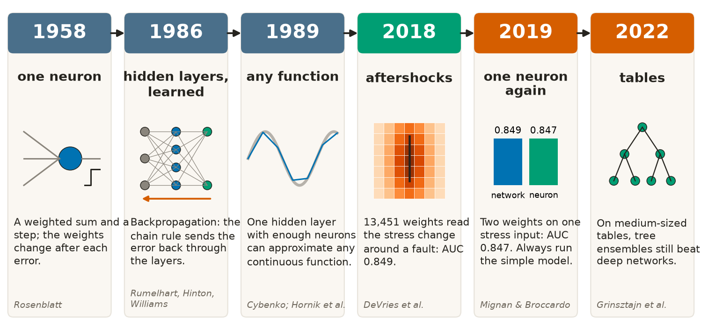
From one neuron to deep networks, then back to one neuron, and to trees.
Rosenblatt (1958) Psychol. Rev. 65, 386–408 · Rumelhart, Hinton & Williams (1986) Nature 323, 533–536 · Cybenko (1989) Math. Control Signals Syst. 2, 303–314; Hornik, Stinchcombe & White (1989) Neural Netw. 2, 359–366 · DeVries et al. (2018) Nature 560, 632–634 · Mignan & Broccardo (2019) Nature 574, E1–E3 · Grinsztajn, Oyallon & Varoquaux (2022) NeurIPS 35. AUC values: our rerun of the open release (figs/lit_aftershock_2018/numbers.json).
Four sessions, four kinds of network: today, a table
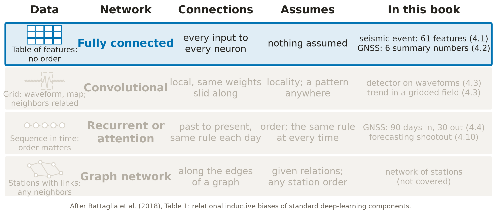
The structure of the data chooses the network. A table of features has no order between its columns: every input connects to every neuron, and the network assumes nothing.
Inside an MLP: every input to every neuron
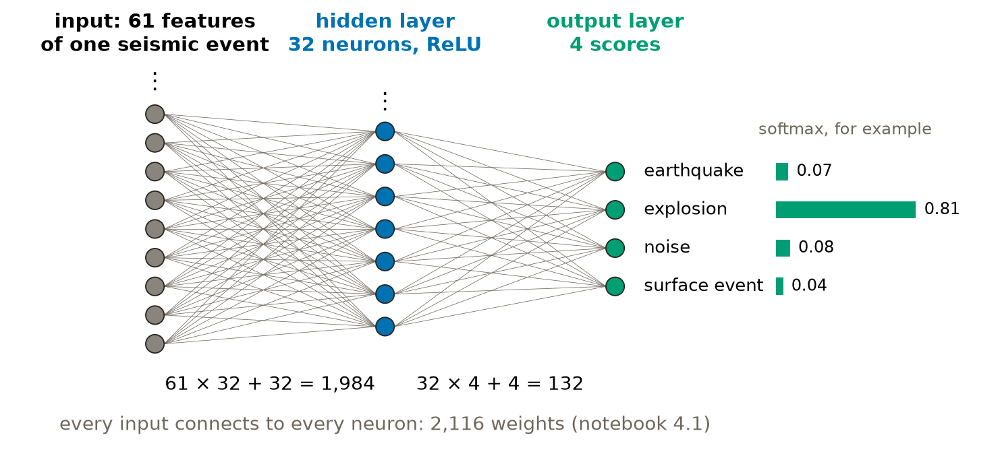
61 features in, 32 hidden neurons with ReLU, 4 scores out: 2,116 weights (notebook 4.1). The softmax turns the scores into probabilities.
One dense layer by hand
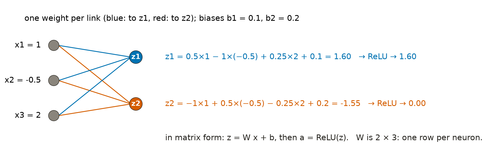
Each neuron: a weighted sum of all inputs plus its bias, then ReLU. Here z1 = 1.60 passes; z2 = −1.55 becomes 0. In matrix form, z = W x + b.
Each hidden neuron cuts the input space
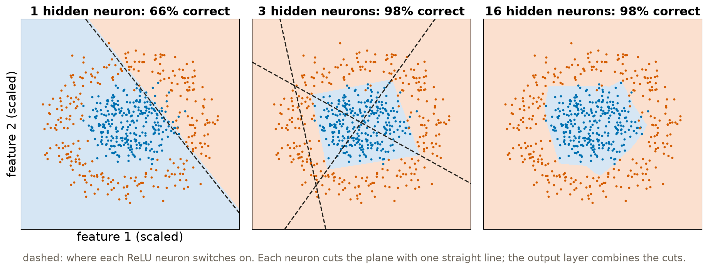
One ReLU neuron draws one straight line: 66% of the training samples right on a ring. Three lines enclose the core: 98%. Sixteen smooth the edge: 98%.
How many weights to fit?
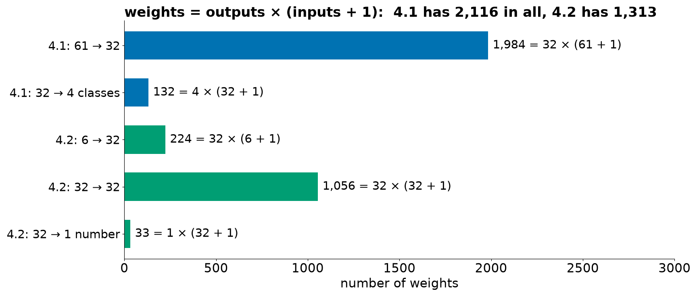
weights = outputs × (inputs + 1): 2,116 in 4.1, 1,313 in 4.2. Start small, one hidden layer of 16 to 64 neurons, and grow only if the training loss stays high.
Wide and shallow, or deep and narrow?
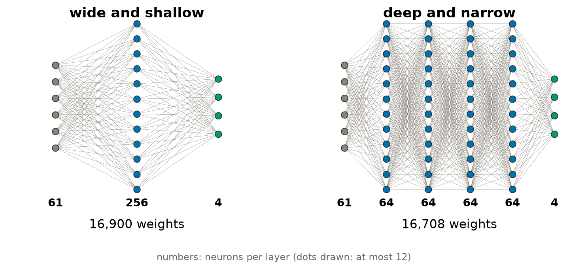
At about 17,000 weights each: 256 neurons in one layer, or 64 in each of four. Depth composes cuts of cuts; for a table of features, one or two hidden layers are usually enough.
An MLP sees no order
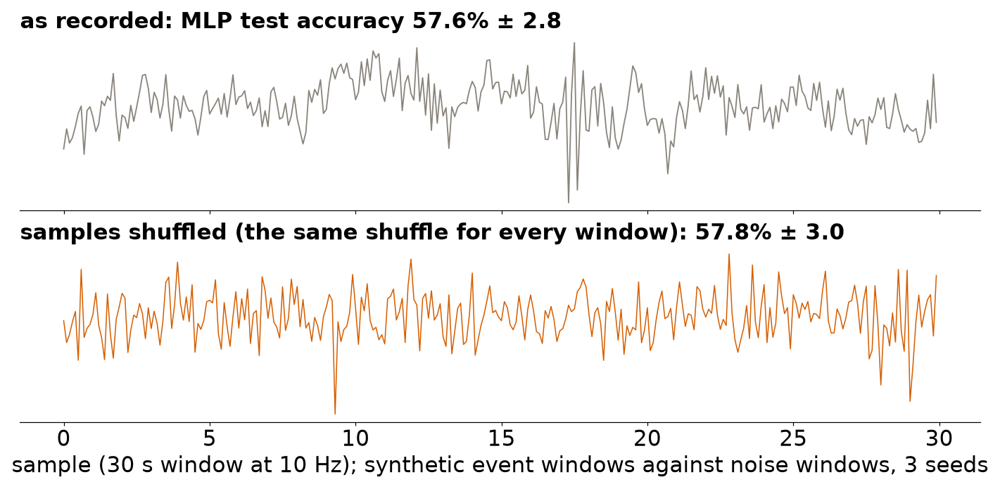
Shuffle the samples of every window in the same way and the MLP scores the same, 57.6% and 57.8%: it never used the shape of the waveform. Right for a table, wasteful for a waveform.
Scale the inputs first
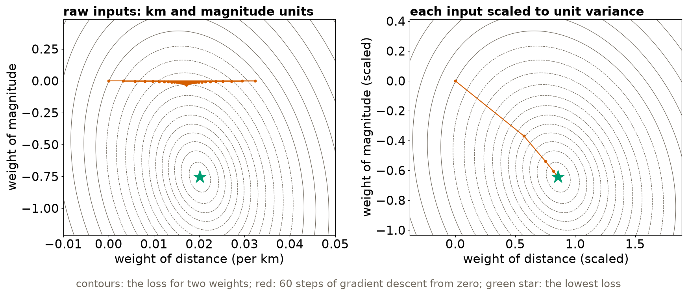
In km and magnitude units the loss is a narrow valley: after 60 steps the magnitude weight is −0.03 of −0.76. Scaled to unit variance, the same 60 steps reach the lowest loss.
Dropout: train with random neurons switched off
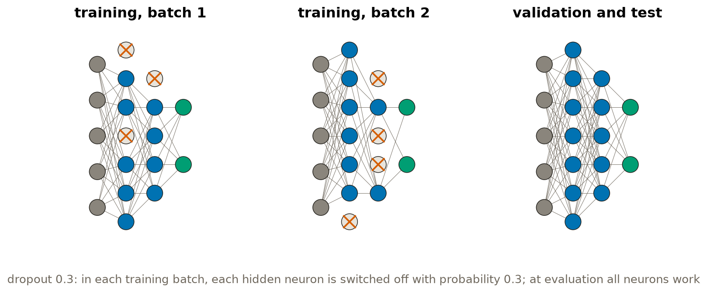
In each training batch, each hidden neuron is off with probability 0.3, so no neuron can rely on one particular other; at evaluation every neuron works.
Classification or regression: the head decides
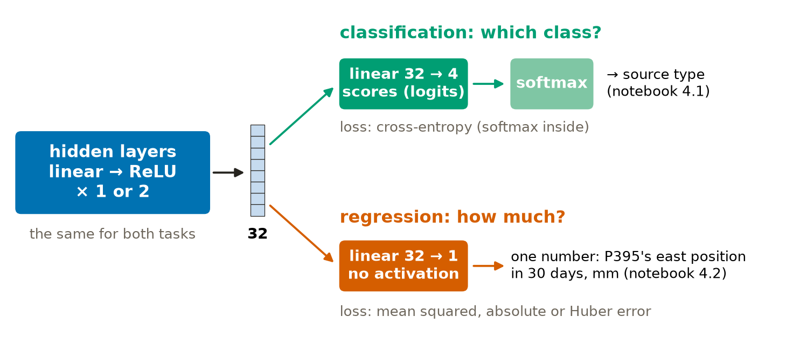
Classification: one score per class, softmax, cross-entropy (4.1). Regression: one number, no activation, squared, absolute or Huber error (4.2). The hidden layers can be identical.
Two problems, one loop
| Classification (4.1) | Regression (4.2) | |
|---|---|---|
| Sample, input X | seismic event: 61 features | GNSS window: 6 numbers |
| Y, to predict | source type, 4 classes | position in 30 days (mm) |
| Last layer, loss | 4 scores; cross-entropy | 1 number; MSE, MAE, Huber |
| Score, baseline | accuracy; logistic | error in mm; linear |
P395: a station that keeps moving
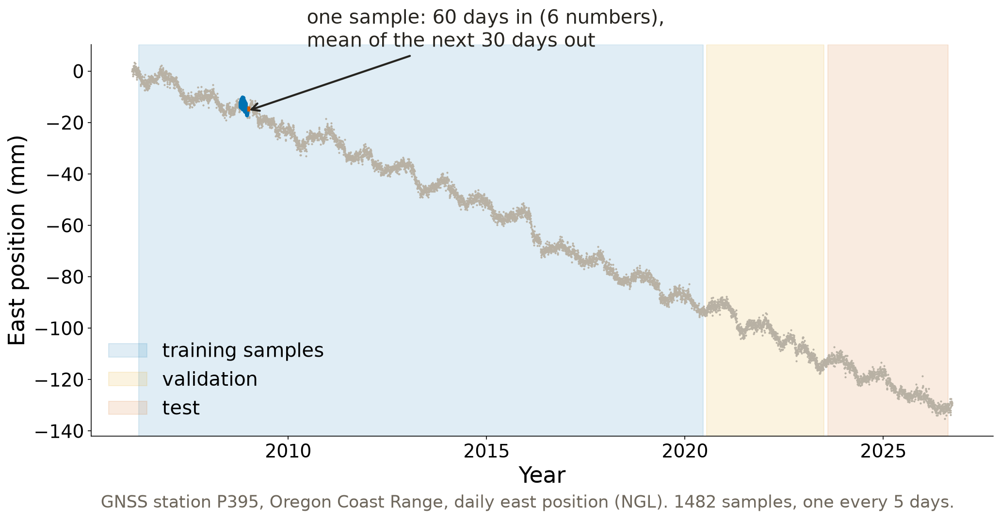
📍 In-situ sensor 🪨 Solid Earth 📐 Geodesy
1,482 samples, one every 5 days, 2006–2026. Train on the first 70%, validate on the next 15%, test on the last 15%, in time order, with a gap so that no 30-day window overlaps.
The loss for a number: what a large error costs
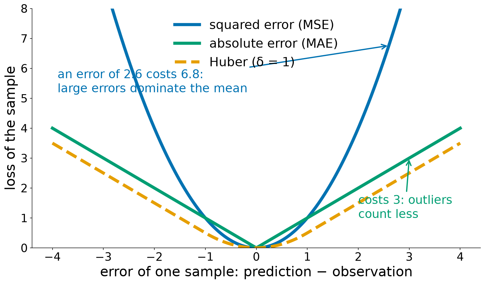
Squared error makes large errors dominate the mean; absolute error weights every millimeter the same; Huber is squared near zero and absolute beyond.
The loss for a class: the probability given to the truth
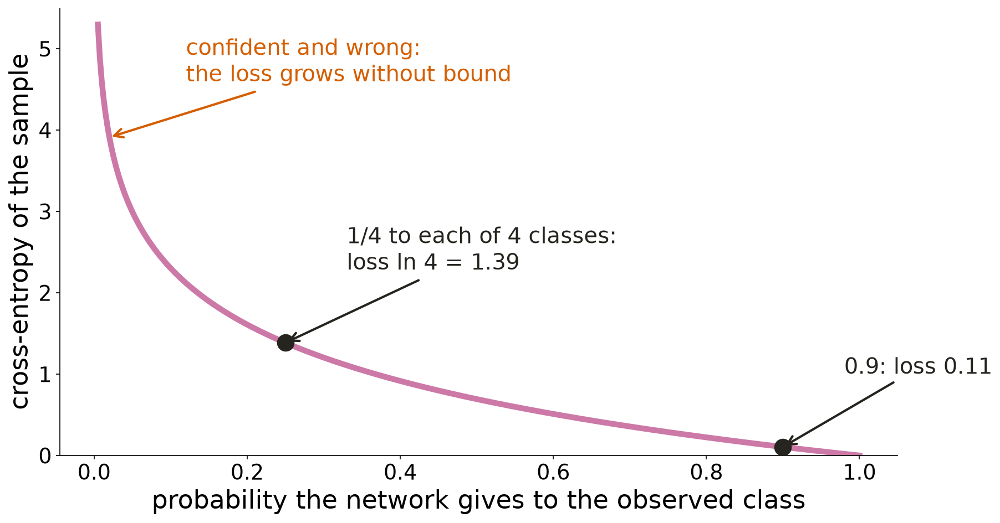
Cross-entropy only looks at the probability the network gives to the observed class: 0.9 costs 0.11, a uniform guess over 4 classes costs 1.39, confident and wrong costs without bound.
Optimization: the learning rate sets how fast the loss falls

Adam, 200 epochs. At 0.0001 the training loss falls slowly and smoothly; at 0.001 faster; at 0.03 fastest, with jumps from update to update.
Training: stop at the lowest validation loss

Over 1,000 epochs the training loss keeps falling, but the validation loss is lowest at epoch 13 and rises after. Keep the weights of that epoch: early stopping with a checkpoint.
Classification: loss curves, confusion matrix
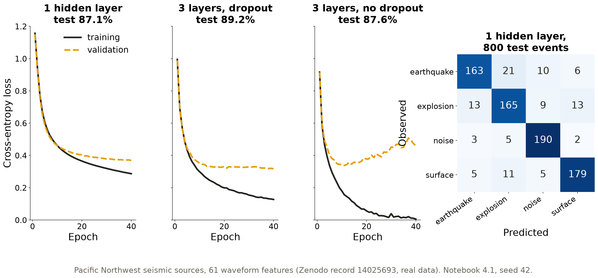
📍 In-situ sensor 🪨 Solid Earth 📈 Seismology
One hidden layer: 87.1%. Three hidden layers with dropout: 89.2%. Without dropout the validation loss climbs after epoch 11. Earthquakes and explosions are confused most.
Regression: the test samples lie outside the training range
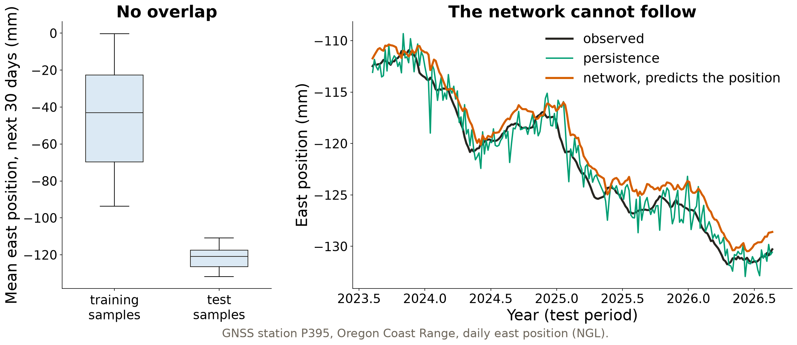
Every test observation, −132 to −111 mm, is below the training range, −94 to 0 mm. A network that predicts the position itself must extrapolate.
Regression: test error in millimeters, three seeds
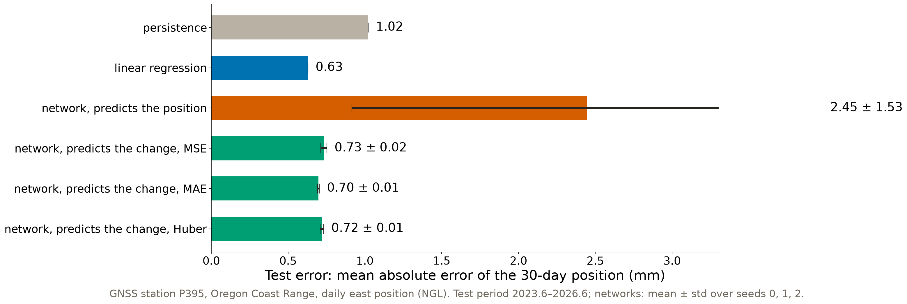
Predicting the change, the network reaches 0.70 to 0.73 mm, better than persistence (1.02) but not than linear regression (0.63). The linear model is the one to use.
Best practices: the fully connected network
| Step | Practice | Rubric |
|---|---|---|
| Frame | split along the deployment axis | A1–A4 |
| Check | inside the training range? | A7 |
| Baseline | no learning; linear or logistic | A6 |
| Design | small; last layer fits Y | C1 |
| Train | seed; loss; curves; checkpoint | D1–D6 |
| Evaluate | test once; units; three seeds | D7–E3 |
Our rubric: what the AI assistant must show
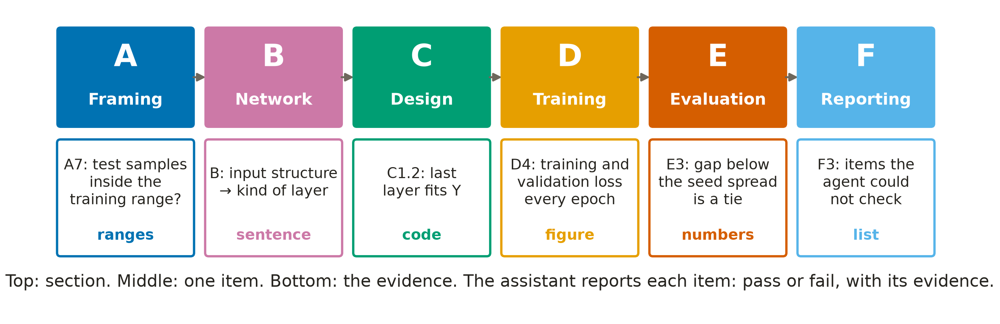
Each rubric item has an identifier, a check and the evidence. The assistant reports pass or fail for each item, with the evidence, and says which items it could not check.
Open 4.1 sections 7–9, then 4.2
- 4.1: dropout and batch normalization; compare the learning curves
- 4.1: save the best model with a checkpoint
- 4.2: build X, Y and the time split; compute persistence
- 4.2: predict the change; compare the three losses
pixi run jupyter lab · PyTorch names: nn.MSELoss, nn.L1Loss, nn.HuberLoss, nn.CrossEntropyLoss, optim.Adam, state_dict
ESS 469/569 · Machine Learning in the Geosciences · Autumn 2026